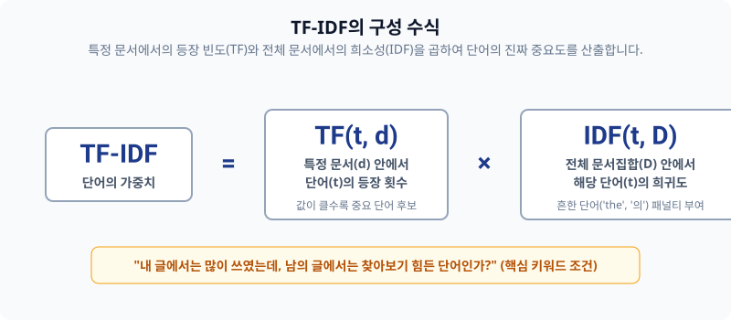
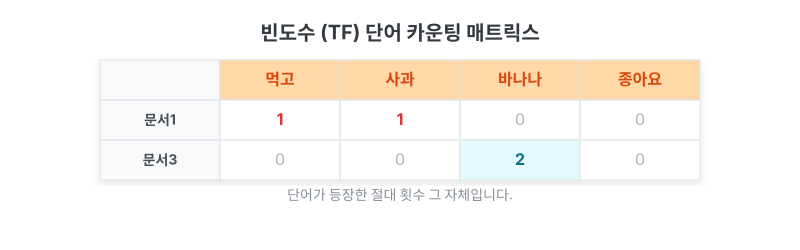
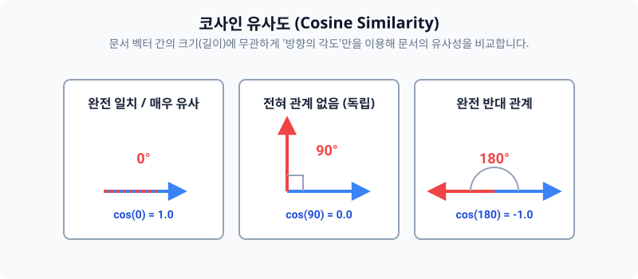
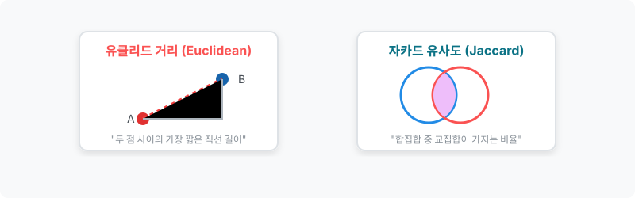

TF-IDF 모델과 벡터의 유사도 계산 방정식
이 문서에서는 단순 카운트 기반(DTM)의 치명적인 단점을 수학적으로 완전히 제압하는 TF-IDF 보정 방정식과, 우주 공간(좌표축)에 뿌려진 문서 벡터들 간의 거리를 자로 재보는 텍스트 척도(유사도)를 아름다운 수학 공식과 함께 배웁니다.
00. TF-IDF와 텍스트 유사도
가장 무거운 단어, 핵심 정보를 수학적 저울에 올려놓고 걸러내는 모델입니다.
01. TF-IDF (Term Frequency-Inverse Document Frequency)
단어를 스코어링하는 가중치 기법 중 가장 널리 쓰이는 매우 강력하고 대중적인 엔진입니다.
- 모든 문서에 지겹게 나타나는 흔빠진 관사(
the,a)에는 가차 없이 매우 패널티를 매깁니다. - 반대로, 어쩌다 특정 문서 1개에서 유독 폭발적으로 자주 등장하는 단어라면 “너가 이 문서의 진짜 주인공이구나!” 라며 아주 높은 보너스 점수를 부여합니다.
02. TF-IDF의 수학적 연산 구조
이 식은 우리가 배울 TF 단어빈도 수식과 역문서빈도(IDF) 식을 단순히 서로 곱한 값입니다.

\[\text{TF-IDF}(t, d, D) = \text{TF}(t, d) \times \text{IDF}(t, D)\](단어 $t$, 개별 문서 $d$, 전체 말뭉치 문서 집합 $D$)
03. 단어빈도 (Term Frequency, TF)
- 정의: 특정 문서 $d$ 내부에서 특정 단어 $t$가 등장하는 절대 혹은 상대 카운트.

04. 문서빈도와 역문서빈도 (DF / IDF의 마법)
이 파트가 바로 the, a 같은 잡음을 걸러내는 필터 공식의 핵심입니다.
- DF (문서빈도): 총 100만 개 문서 중에서, 단어 $t$가 1번이라도 쓰여진 ‘문서들의 갯수’입니다. (이 수치가 높을수록 뻔한 단어)
- IDF (역문서빈도): DF를 분모로 깔고 자연로그($\ln$)를 씌워버려서 패널티 보정값을 만들어냅니다.
[!TIP]
📖 초심자를 위한 쉬운 해설
분모에 뜬금없이+ 1이 왜 있나요?
만약 듣도보도 못한 외계어 단어가 들어와서 전체 문서 중에 등장 횟수가0번이 찍히면, 분모가0이 되는 순간 파이썬 프로그램엔 심각한 Divide by Zero 에러가 터지고 죽어버립니다! 이를 막아주기 위한 일종의 보험용 스무딩(Smoothing) 더하기입니다.
05. TF-IDF 행렬 결과 및 활용
각 단어 고유의 희소성(IDF) 보정값을 TF에 곱하면, 단순 빈도수 카운트표(DTM)에서는 가려졌던 진정으로 문서 특징을 식별할 수 있는 소수점 가중치가 완성됩니다.
06. 텍스트 유사성 척도 (Vector Similarity)
이제 텍스트를 모두 수학적인 벡터 화살표 $\mathbf{v}$ 로 치환했습니다. 기하학적 공간에 떠다니는 두 문서 벡터가 얼마나 똑같은 의미를 가지는지(‘가까운지’) 실수(Float)로 뽑아내 볼 차례입니다.
07. 코사인 유사도 (Cosine Similarity)
자연어처리 분야에서 가장 압도적으로 많이 쓰이는 최고 존엄 유사도 판별법입니다.
\[\text{Cosine}(A, B) = \cos(\theta) = \frac{\mathbf{A} \cdot \mathbf{B}}{\|\mathbf{A}\|\|\mathbf{B}\|} = \frac{\sum_{i=1}^{n} A_i B_i}{\sqrt{\sum_{i=1}^{n} A_i^2} \sqrt{\sum_{i=1}^{n} B_i^2}}\]- 오직 두 문서 벡터가 향하는 ‘각도($\cos$)’의 방향만을 비교합니다.
- 똑같이 겹치면(0도)
1, 아예 반대로 향하면(180도)-1을 반환합니다.

08. 문장 코사인 유사도 왜 좋을까? (길이 방어막)
문서1 : 저는 사과 좋아요
문서3 : 저는 사과 좋아요 저는 사과 좋아요
[!IMPORTANT]
📖 초심자를 위한 쉬운 해설
문서3은 사람으로 치면 말만 엄청 두 배로 많이 하는 앵무새일 뿐, 사실상 문서1과 의미성분 비율은 완전히 100% 똑같습니다!
다른 거리 척도들(예: 직선을 재는 유클리드)은 문서3의 꼬리가 길다고 “음, 둘은 엄청 멀고 다른 문서네?” 라고 오판합니다.
하지만 코사인 유사도는 오직 방향의 비율(각도)만 쳐다보기 때문에, 말의 길이에 절대 속지 않고 “너네 둘은 각도가 0도로 똑같네. 100% 일치(1.000) 문서!” 라며 정답을 가려냅니다. 이것이 NLP 깡패 기술인 이유입니다.
09. 여러 가지 거리 유사도 기법 비교
코사인 이외에도 다른 기하학적 수학 거리 공식들이 있습니다.

유클리드 (Euclidean) 유사도
- 우리가 중학교 수학 시간에 배운 피타고라스 직각삼각형 빗변(가장 짧은 직선 거리)을 구하는 공식입니다. \(d(\mathbf{A}, \mathbf{B}) = \sqrt{\sum_{i=1}^n (A_i - B_i)^2}\)
자카드 (Jaccard) 유사도
- 찌그러진 공간 좌표계를 쓰지 않고, 순수 집합(Set) 단위로 벤다이어그램을 그려 교집합 비율(A∩B / A∪B)을 재는 매우 직관적이고 가벼운 로직입니다. \(J(A, B) = \frac{|A \cap B|}{|A \cup B|} = \frac{|A \cap B|}{|A| + |B| - |A \cap B|}\)
10. 파이썬 코드 실습 안내
파이썬의 scikit-learn 라이브러리를 활용하면, 여러분은 저 복잡한 기하학적 수식(루트와 시그마)을 전혀 알지 못해도 단 두 줄 만에 수만 장의 텍스트를 TF-IDF Matrix로 변환할 수 있습니다!
from sklearn.feature_extraction.text import TfidfVectorizer
제공된 Week_3_grad_text_representation.ipynb 주피터 노트북 파일에서 직접 코드를 돌려보며 챗봇 응답 시스템을 설계해 보세요.